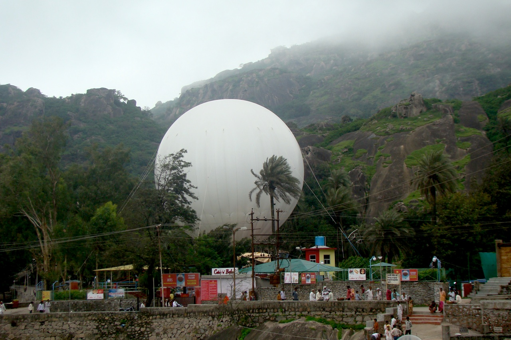
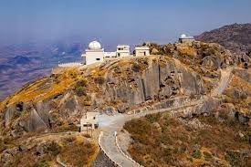

The only hill station of Rajasthan, Mount Abu is located in the Aravali range. The most important attraction, however, are undoubtedly the Dilwara temples, which is one of the most stunning pieces of architecture in the country. Travellers can enjoy calm and relaxed boating in Nakki Lake, and a view of the sunset from the vista points. The restaurants and eateries around the lake are great places to eat local food and chill. The highest peak of the Aravali Range - Guru Shikhar also lies in Mt. Abu. Mount Abu Forest Sanctuary with an abundance of flora and fauna is also a highlight.
The exceptionally intricate architecture of the Dilwara temples are of course the main attraction here, and you can easily spend hours wondering how these temples were built over 2 centuries, almost 1000 years back. The temples were specifically made so that they are plain from the outside to avoid the attraction of plunderers, and have withstood the test of time extremely well.